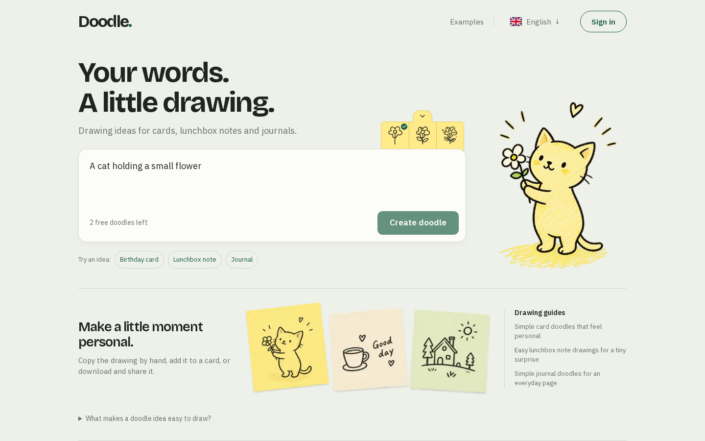
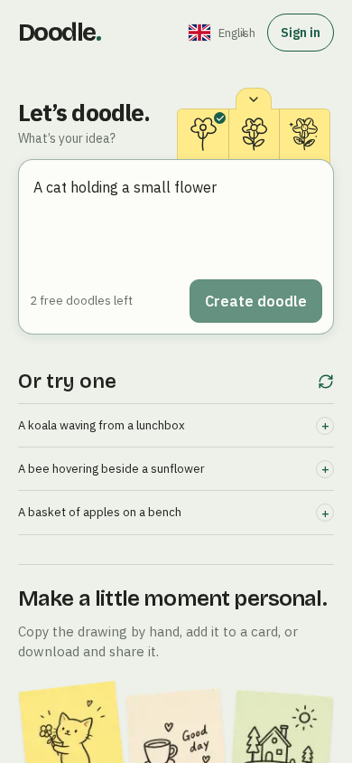
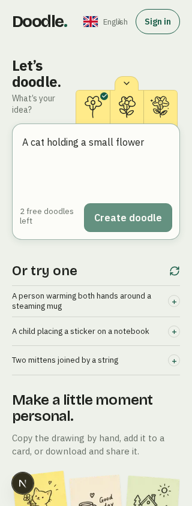
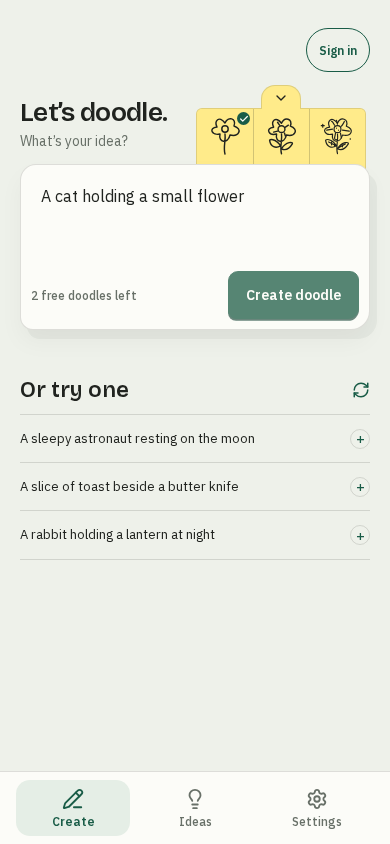
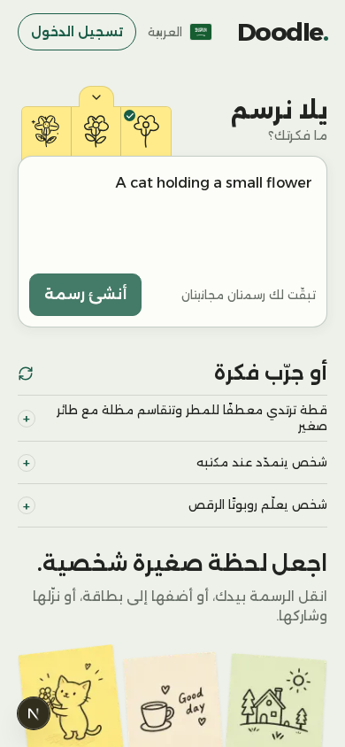
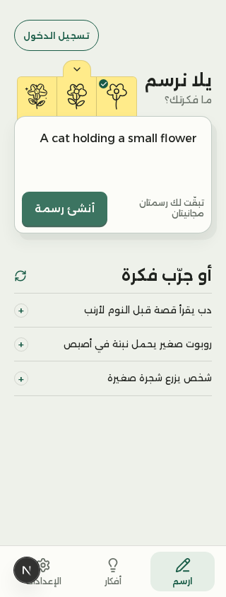
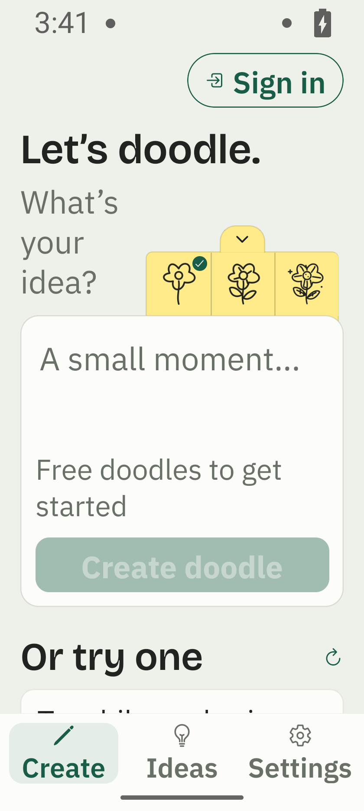
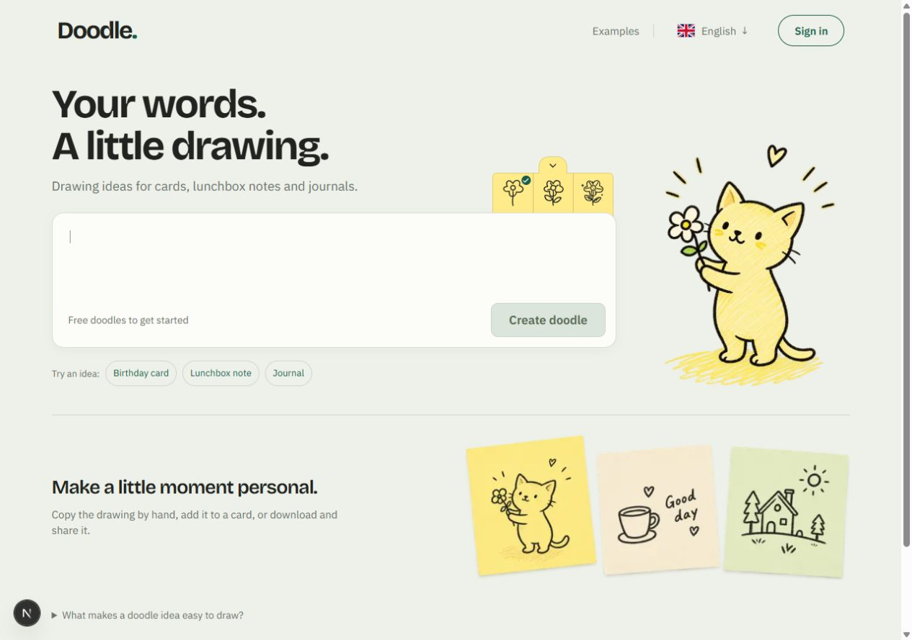
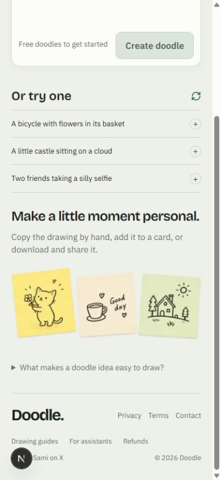

Doodle, combined layout
Actual rendered screens. Desktop combines the cat and pastel examples with tighter spacing. Phones use a compact composer. Android keeps the heading, helper and drawer connected, with more room for enlarged text. Tap a screen to open it at full size.
Review the four counter-free store screenshots
This is an image review, not an interactive app. Web account and generation responses are simulated. Android captures use the isolated presentation fixture. Doodle's live app has not been deployed or published.
















Cleaner supporting section
The extra Drawing guides block is removed. Phones retain the suggestion list divider and omit the second line.

